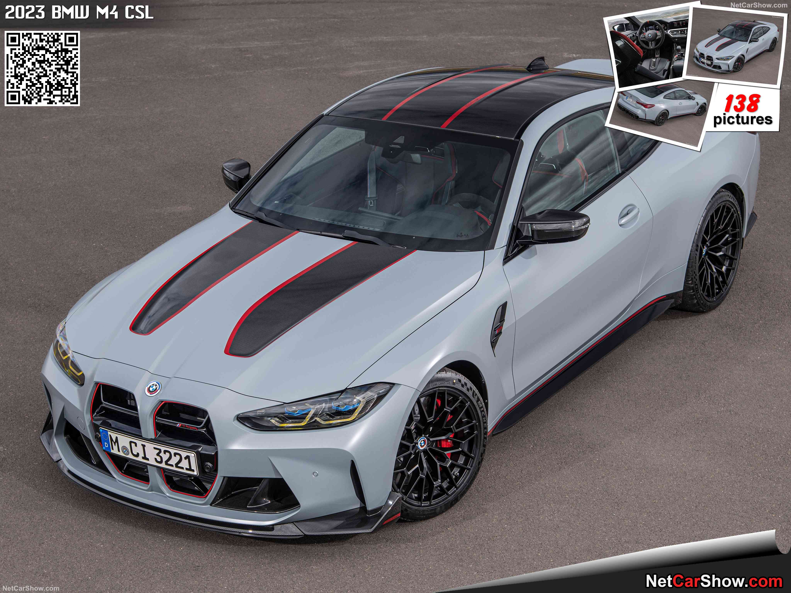
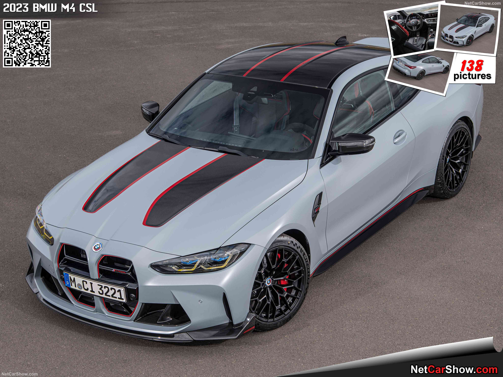
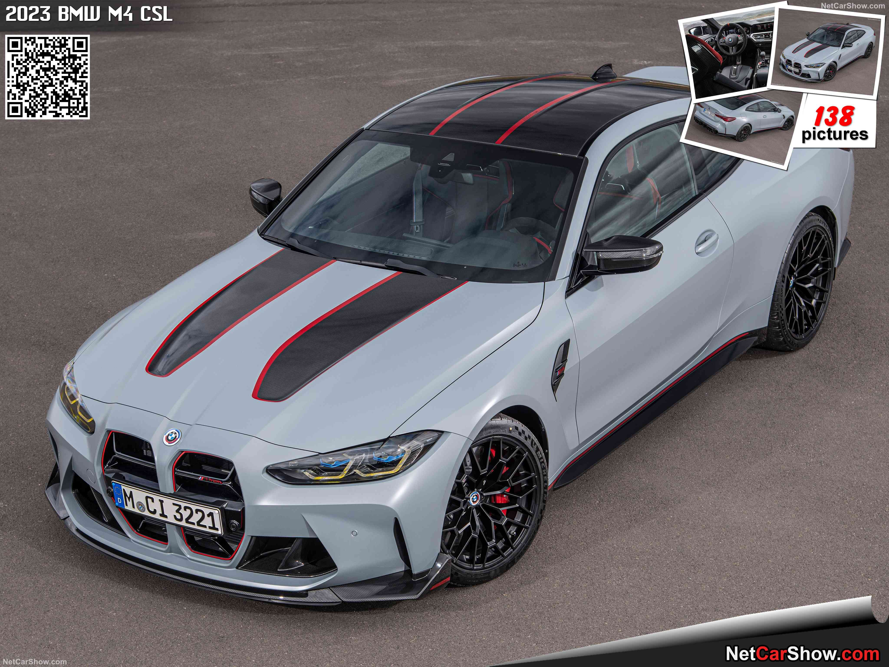

Cars Made For Speed.
This are all 2025 released models, selected for those that like to drive fast. The new BMW M4 has the speed 250 km/h. The standard 0 to 100 km/h acceleration is around 4.9 seconds.
 


This are all 2025 released models, selected for those that like to drive fast. The new BMW M4 has the speed 250 km/h. The standard 0 to 100 km/h acceleration is around 4.9 seconds.
